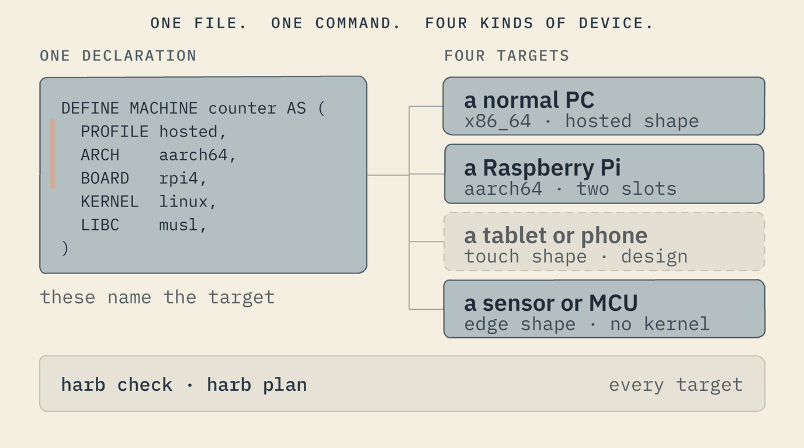
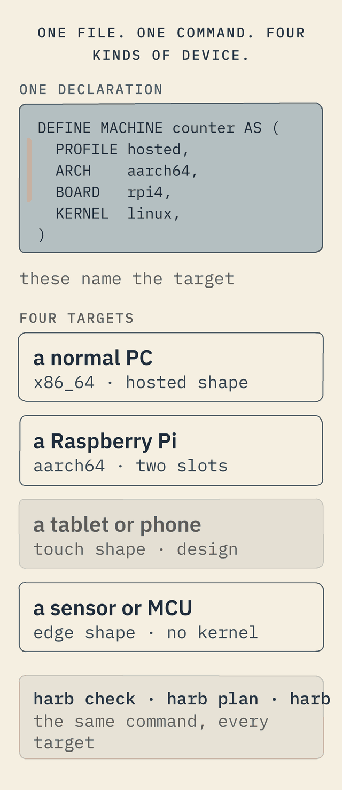

Build on it
Your apps, your languages, one binary to any device.
What runs on a declared machine, the polyglot Haro family it hosts, the local-first model, and how you ship it — from a laptop to a PC, a Pi, a phone or a sensor.


Your apps, declared
Restricted, not empty. You bring the programs; you declare them.
A declared machine refuses a shell, a store and an installer. It does not refuse your software. What runs on it is whatever you declare as a service — a long-running program or a one-shot — provided it says what it needs. The restriction is not “few apps.” It is “nothing you did not declare.”
DEFINE SERVICE counter AS ( RUN ["/app/counter"], RESTART always, READY "/run/counter.ready", NEEDS [network, filesystem] ) RATIONALE "the point-of-sale world; it says when it is serving"
The exact program to start, with its arguments — never through a shell.
The machine keeps it alive, and says so in the transcript when it restarts.
The program's own signal that it is serving; nothing that depends on it starts before.
What the machine must grant. Everything not listed is refused — no network, no disk, no reaching another program.
What is “the program” in RUN? Whatever you point it at. It can be a self-contained executable the machine launches directly — anything compiled to run on Linux — or a program written in a family language that the on-image runtime executes. To the machine both are the same: the one process to start, confined to what it declared and kept alive. So you bring existing binaries, or you write in the Haro family below.
Bring what you already have
If it compiles to a self-contained Linux executable — Go, Rust, C, Zig, anything static — you declare it and it runs. Nothing about your program has to know it is on Harobanda, and nothing below is required to use any of this. There is no ecosystem you have to join.
And a family you may use instead — none of it obligatory
If you would rather not assemble a stack, the Haro family is a coherent set of open tools already usable in real projects — and the answer to “what web server, what app server, what agentic server”. It is an option on top of the floor, never a condition of standing on it.
The server, the pages and the edge substrate are proven and in use today. Unifying them onto the one Haro engine — the successor to the one they run on now — is what turns them into a single coherent, sovereign system, from the machine to the application.
No separate web stack to assemble, and no second language at the boundary. One engine, many languages; one host, every app.